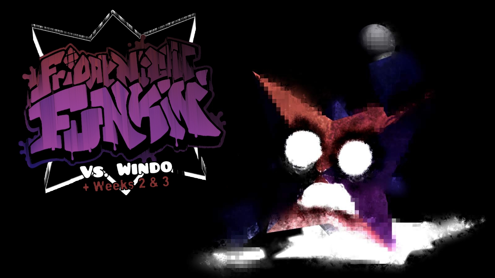
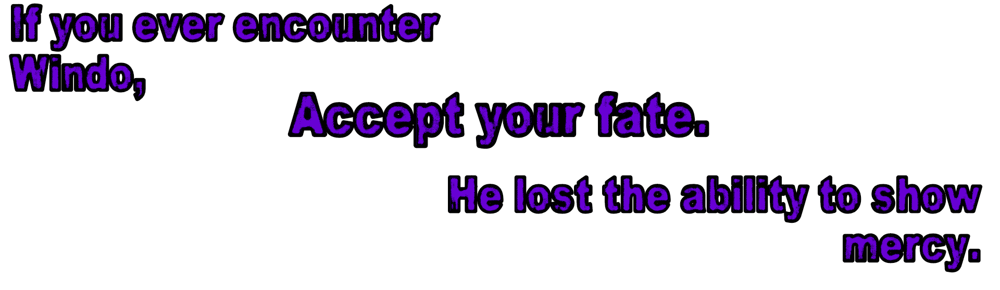

CHARACTERS
This is where information for all characters can be found.
Windo
Appearance
Windo is depicted as a 16-sided shape called a Hexadecagon, or an octagonal star. He is composed of 3 colors. Those being desaturated crimson, violet, and royal blue. He has a diagonal cross colored black that covers his body, segmenting him into four parts.
He has two white ovals for eyes and a white mouth that bleeds into his body. He has two crimson and navy blue hands which are akin to a human's.
Personality
Windo is a chaotic and highly spontaneous anomaly. He hates everyone and anyone regardless of mutual status and will act violently towards those who step in his way. The only exception to this is whoever might be corrupting him. Many have tried reaching out to him through emotions and memories, but nobody has succeeded without redeeming ubiquitous tribulation. His deplorable and unstable state makes him incapable of perceiving emotions, causing him to glitch out. He is only capable of shouting due to being in constant suffering.
Extra



